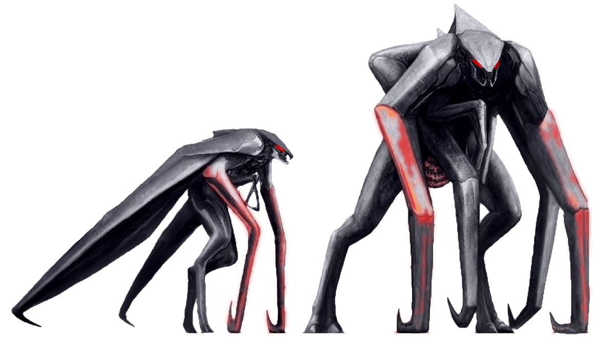
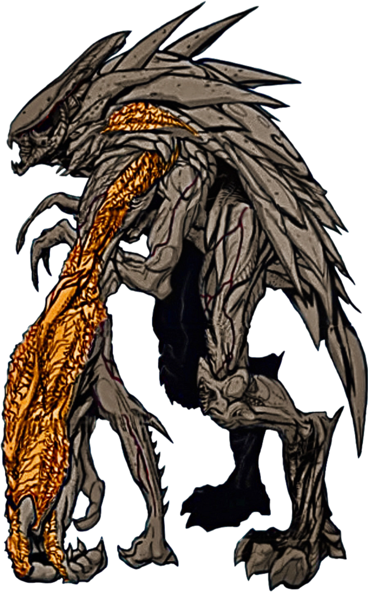
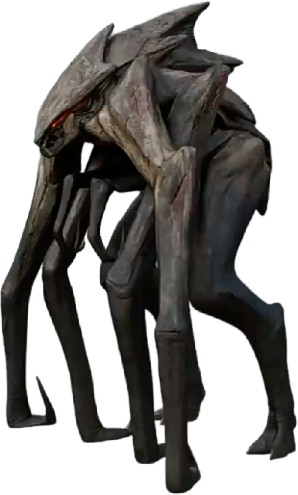

MUTO (Massive Undentified Terrestrial Organism) ou Jinshi-Mushi é um monstro ficional criado pela legendary studios para o filme "Godzilla" lançado em 2014 agindo como os principais antagonistas do filme, eles buscam criar um ninho usando de energia nuclear para alimentar os filhotes. Eles possuem uma aparência semelhante a de insetos com traços aracnídeos, além de comportamentos semelhantes
Como dito acima MUTOs possuem uma aparência parecida com de insetos e traços aracnídeos, com o macho sendo menor (60 Metros) e possuindo asas e a fêmea possuindo 8 patas e sendo ligeiramente maior com 90 metros e ausência de asas

Em alguns casos MUTOs podem acabar tendo mutações aumentando sua força resistência e tudo mais, essas mutações occorem EXCLUSIVAMENTE nas fêmeas da espécie. Existem duas mutações conhecidas sendo elas nomeadas de "Queen" e "Prime"
Teve sua primeira aparição na graphic novel "Godzilla: Aftershock" sendo um dos filhotes dos MUTOs que lutaram contra o Godzilla em São Francisco no filme de 2014. Seu corpo continua igual ao de um MUTO comum, com diferença das patas dianteiras que possuem uma carapaça mais rígida e cor alaranjada, com duas garras extremamente afiadas. Seu objetivo era infectar Godzilla com uma larva parasitária eventualmente criar uma hiperpopulação de MUTOs. Mais tarde na Novel é revelada que essa forma é semelhante a uma forma ancestral de um MUTO que lutou contra Dagon um Ancestral de Godzilla que conhecemos.

Teve sua primeira aparição no filme "Godzilla II Rei dos Monstros" de 2019 não sabemos exatamente como ocorreu ou pra que ela apareceu, já que a uníca coisa que ela fez foi se curvar perante ao Godzilla no final do filme. A Queen MUTO é maior do que os MUTOs normais e possui uma estrutura osseá semelhante de a de uma tíara sendo a origem de seu nome. Os fãs apelidaram ela carinhosamente de Barb.

Total: 0 | Pendentes: 0 | Concluídas: 0